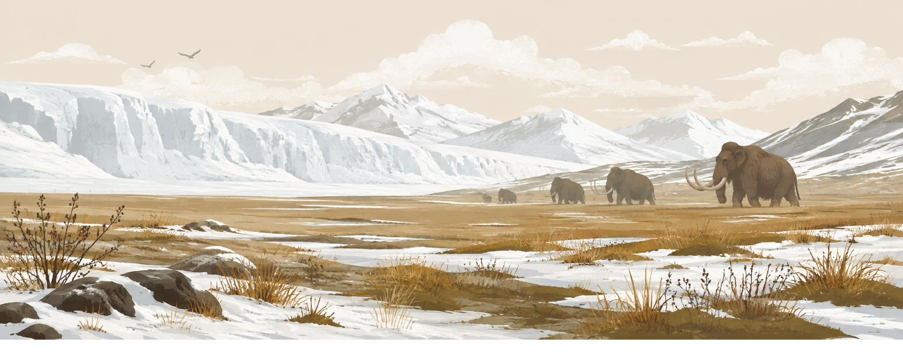
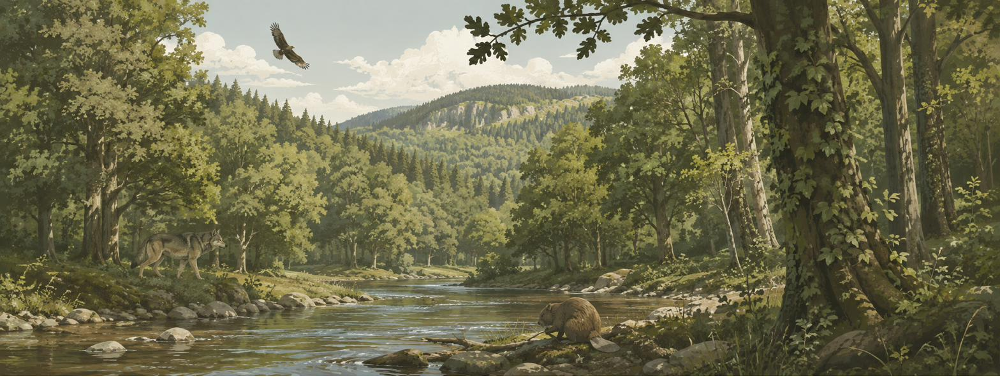
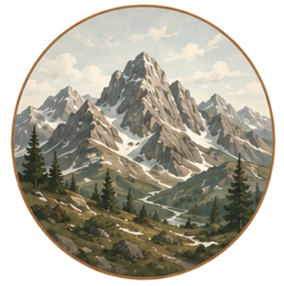
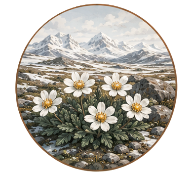
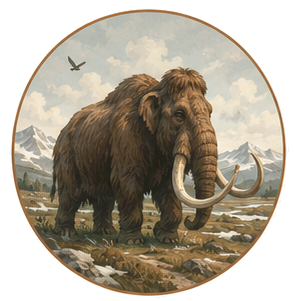
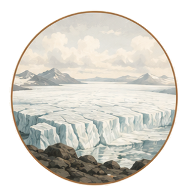
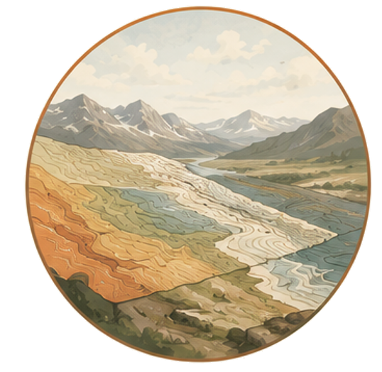
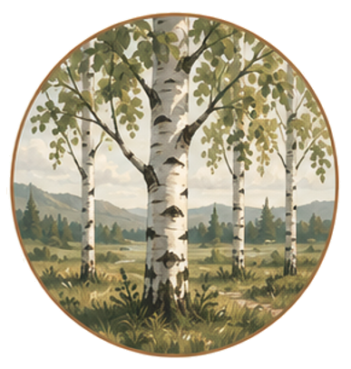
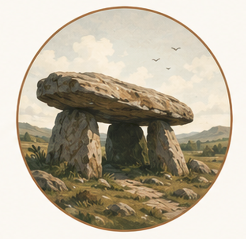

Explore the changing lands of prehistoric Europe
From the lost lands of Doggerland and the vast ice sheets of the Last Glacial Maximum to the dense oak forests of the Atlantic period, Europe’s landscapes have constantly changed. Shaped by climate, by animals, and eventually, by us.


Landscape, flora and fauna, in brief
Three threads run through all ten periods in this atlas. The full story unfolds period by period once you're in the app.

Landscape & climate
From a gigantic ice sheet over Scandinavia and Britain, winters roughly 15–30°C colder than today, through sea levels 120m lower, to the flooding of Doggerland and the coastlines we now call normal.

Flora
The barren polar desert gave way to birch and pine, then an explosive spread of hazel, then oak, elm and lime took over, closing into the densest forest Europe had seen in 23 million years.

Megafauna
Mammoths, woolly rhinos, wild horses, aurochs and giant deer once kept the land open. Today, large-herbivore biomass is 94.5% below the last interglacial baseline. The animals that shaped the landscape are now largely gone.
A slow megafauna collapse, not a single event
The loss of Europe’s megafauna unfolded over tens of thousands of years. Mammoths disappeared first, followed by wild horses, giant deer, aurochs, bison, elk and beaver. As human pressure, climate and habitat change compounded, species retreated one by one. Without these large herbivores, the open, forb-rich landscapes gradually closed into dense forests — often mistaken for Europe’s natural primeval state.
Explore the landscape, period by period
Step through 10 time periods and watch Europe come back to life after the last Ice Age. Toggle present-day coastlines and borders to orient yourself, then discover drowned lands like Doggerland, lost inland seas, ancient lakes, shifting forests, megafauna, and the people who lived through it all.

Pick a period
Move through the timeline from the Last Glacial Maximum to present day using the period bar.
Navigate the ancient landscape
See vegetation, forest cover, coastlines, river-systems, lakes and land ice extent rendered from real palaeoecological datasets.
Meet the species
Flora and fauna cards reveal what once lived there, how these species shaped the landscape, and what happened to them as the environment changed.
Discover the archaeology
For every period, key archaeological sites and summaries are now available in the app. Explore the archaeological sites where discoveries were made, and learn how our ancestors lived, adapted, and thrived across a constantly changing Europe.